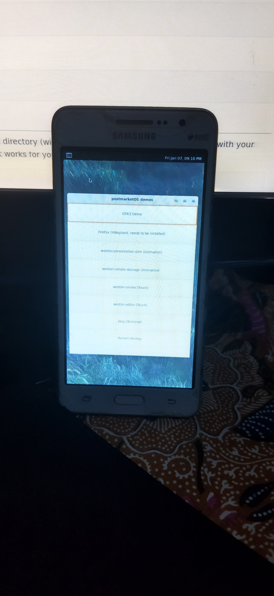

Samsung Galaxy Grand Prime VE 3G (samsung-grandprimeve3g)
Jump to navigation
Jump to search
|
 Weston running on Samsung Galaxy Grand Prime VE 3G | |
| Manufacturer | Samsung |
|---|---|
| Name | Galaxy Grand Prime VE 3G |
| Codename | samsung-grandprimeve3g |
| Released | 2015 |
| Category | testing |
| Original software | Android 5.1.1 (Lollipop) |
| postmarketOS kernel | 3.10.105 |
| Hardware | |
| Chipset | Spreadtrum SC8830 |
| CPU | Quad-core 1.3 GHz Cortex-A7 |
| GPU | Mali-400 MP2 |
| Display | 5.0" 540x960 TFT LCD |
| Storage | 8 GB |
| Memory | 1 GB |
| Architecture | armv7 |
{kind=link}
| USB Networking |
Works
|
|---|---|
| Flashing |
Partial
|
| Touchscreen |
Works
|
| Display |
Works
|
| WiFi | |
| FDE | |
| Mainline | |
| Battery | |
| 3D Acceleration | |
| Audio | |
| Bluetooth | |
| Camera | |
| GPS | |
| Mobile data | |
| SMS | |
| Calls | |
| USB OTG | |
| NFC |
Unavailable
|
| Accelerometer | |
|---|---|
| Magnetometer | |
| Ambient Light | |
| Proximity | |
| Hall Effect | |
| Barometer | |
| Power Sensor | |
| Camera Flash | |
|---|---|
| Keyboard | |
| Touchpad | |
| USB-A | |
| HDMI/DP | |
| Ir TX | |
| Ir RX | |
| Stylus | |
| Haptics | |
| Ethernet | |
| FOSS bootloader | |
| Note: This page is about Samsung Galaxy Grand Prime VE 3G based on Spreadtrum SC8830. |
| This page is a work in progress, and is not complete enough at this point to be useful. It will updated for several testing updates |
Contributors
Users owning this device
How to enter flash mode
Press Power + Volume Up + Home button to boot into recovery mode (i want to recommend using TWRP Recovery)
Installation
Some heimdall-based phones may have this issue: Using standard flashing method, it won't work because system partition is too small. See Troubleshooting: Failed to confirm end of file transfer sequence
Run the following command:
$ pmbootstrap install --android-recovery-zip # Generate flashable zip file
$ pmbootstrap export # Export zip file to /tmp/postmarketOS-export
$ # Copy flashable zip file to your phone
$ cp $(readlink /tmp/postmarketOS-export/pmos-*.zip) /path/to/phone_storage
Note: Make sure your phone have installed TWRP Recovery to flashing your phone
You can also do with sideloading adb from recovery. See Sideload ADB Installation